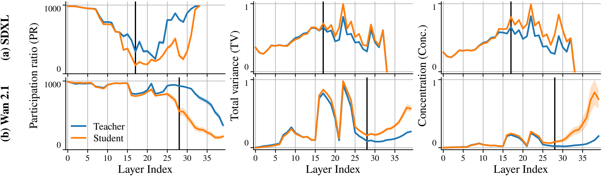
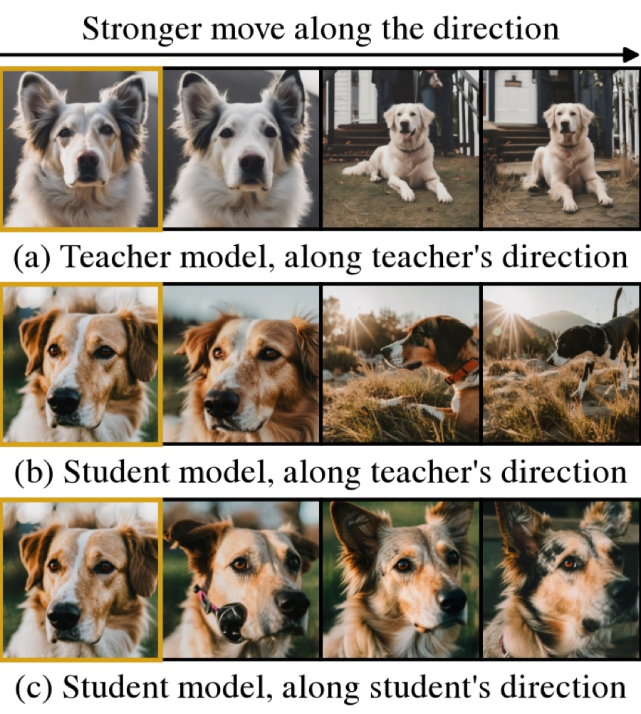
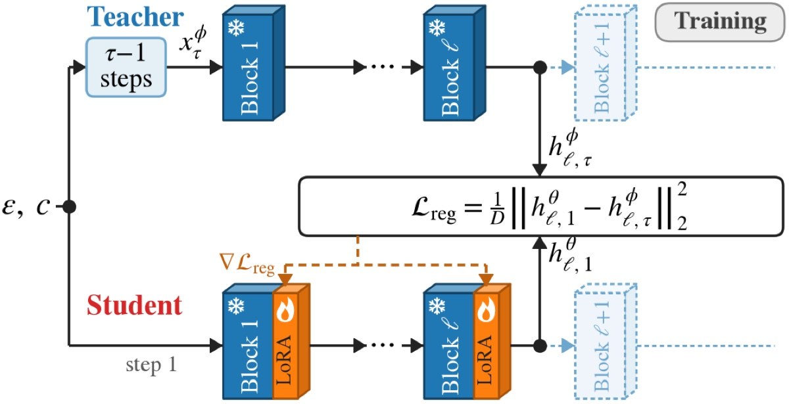
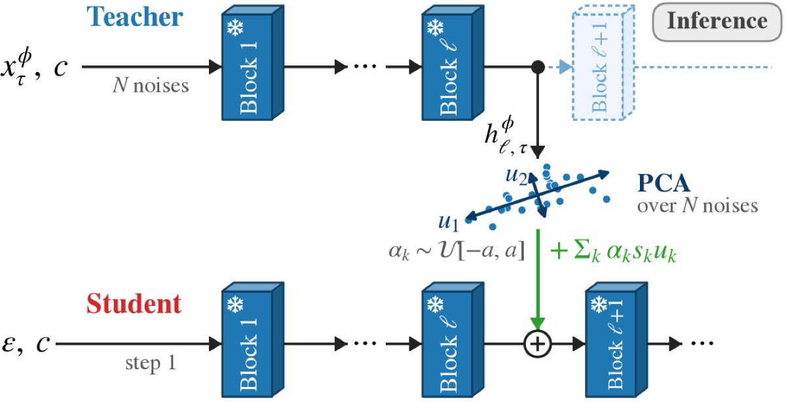

TL;DR: Few-step students keep (or even exceed) their teachers' activation variance but squeeze it into fewer directions, starting at one intermediate block of the first denoising step. ReDiverse puts the missing directions back with a short fine-tune (ReDiverse-FT), with no training at all (ReDiverse-TF), or with both.
Abstract
Distilling diffusion models into few-step student models substantially reduces sampling latency, but induces severe diversity collapse: samples generated from different random seeds show minimal variation. In this work, we investigate the root cause of this failure by probing the internal representations of student models relative to their teachers. We find that distilled students maintain total activation variance comparable to their teachers, but concentrate it into substantially fewer directions. This directional collapse is localized to an identifiable intermediate block at the initial denoising step. Consequently, diversity collapse stems from a misallocation of activation variance rather than an inherent loss of generative capacity. Guided by this finding, we propose ReDiverse to reinstate the missing variance directions. At training time, ReDiverse-FT fine-tunes a lightweight adapter that regresses student activations onto the teacher's, reviving the teacher's feature variance characteristic. At inference time, ReDiverse-TF introduces a training-free mechanism that steers activations along precomputed teacher principal directions. Across image and video distillation benchmarks, ReDiverse consistently restores sample diversity while preserving generation quality, further supported by the user study.
Video Results
Seed-matched clips: each column starts from the same initial noise in both rows.
Image Results
Six seed-matched samples per prompt: the same position starts from the same initial noise in both grids.
Click any image to view it at full resolution.
Same Variance, Fewer Directions
We give the same noises to a teacher and its 4-step student, run their first denoising step, and look at the activations of every block across noises. Three quantities describe that cloud: its total variance, its participation ratio (how many directions the variance effectively spans), and the concentration (variance per direction). Early blocks match. At an intermediate block, the collapsed block ℓ, the student keeps or even amplifies the total variance, but spans far fewer directions, and the collapse propagates to the output.

| Student / teacher at ℓ | PR | Total variance | Concentration |
|---|---|---|---|
| DMD2 (SDXL) | 0.40 | 1.63 | 4.76 |
| TDM (SD3) | 0.49 | 1.03 | 2.68 |
| lightx2v (Wan 2.1) | 0.60 | 1.41 | 2.54 |
| Turbo (MiniMax-H3) | 0.37 | 2.92 | 8.08 |
The lost directions are still decodable
We move the first-step activation at the collapsed block along a top principal direction, with growing strength. Moving the teacher along its own direction changes framing, pose and scene. Injecting that same teacher direction into the student produces the same structural changes, with no change to the student's weights. Moving the student along its own direction only changes appearance, such as coat pattern and lighting. The directions lost in distillation are the ones that set structure, and the student's later blocks can still render them. Diversity collapse is a misallocation of variance, not a loss of capacity.

Method
ReDiverse restores the missing directions at the collapsed block ℓ, in the student's first step only. The two parts can be used alone or together.


Quantitative Results
Sample diversity measured with DINO (mean pairwise distance between samples of a prompt, ×100; higher is more diverse) on GenEval (553 prompts × 100 seeds) and VBench (300 prompts × 10 clips). All rows except the teacher sample in four steps. ReDiverse closes most of the gap to the multi-step teacher. Prompt alignment stays close to the student (CLIPScore within 0.5 points on images), while reward-model scores drop on images; the paper reports the full set of diversity and quality metrics and a user study.
| DINO diversity ↑ | SDXL | SD3 | Wan 2.1 | MiniMax-H3 |
|---|---|---|---|---|
| Student (4 steps) | 59.4 | 48.4 | 31.6 | 36.5 |
| ReDiverse-TF | 60.1 | 53.8 | 34.6 | 42.2 |
| ReDiverse-FT | 64.6 | 53.5 | 46.8 | 44.1 |
| ReDiverse | 65.0 | 60.1 | 52.2 | 50.9 |
| Teacher (multi-step) | 66.3 | 61.6 | 51.6 | 52.5 |